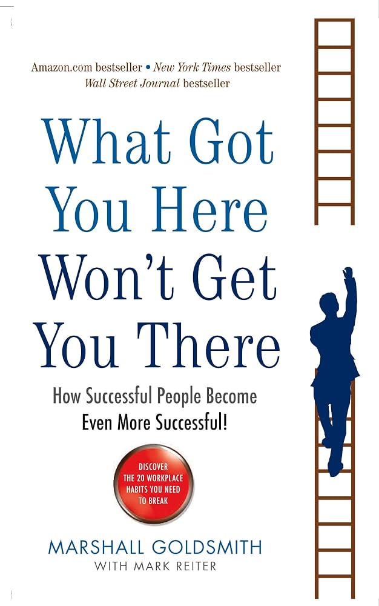

What Got You Here Won't Get You There, by Marshall Goldsmith with Mark Reiter (Hyperion, 2007), is a short, practical argument from an executive coach: successful people are rarely held back by a lack of talent. They are held back by habits in how they treat colleagues, habits that were tolerated or even rewarded on the way up and that become a drag once success depends on other people's willingness to follow, share and cooperate.
The first section explains why successful people struggle to see this. Goldsmith describes four beliefs that success tends to produce (I have succeeded, I have the ability to succeed, I will succeed, I choose to succeed) and argues they add up to a delusion: because the behaviours were present when I won, they must be part of why I won. The second section is a catalogue of twenty habits, plus a "twenty-first" (goal obsession). The third turns to change: gather feedback, apologise, tell people what you are working on, listen, say thank you, follow up, and use "feedforward". The last section covers the rules for making change stick and the extra challenges of being the person in charge.
The book is about behaviour that other people see. It does not claim that the habits are character flaws, and its remedy is mostly about how you respond to people rather than about introspection.
The four beliefs from Chapter 3. Each is helpful alone; together, Goldsmith argues, they are why capable people resist change.
A sense of past accomplishment that makes every earlier behaviour feel validated, whether or not it contributed.
Confidence that you can do what you set out to do. Good for ambition, but it can wave off feedback that says otherwise.
Optimism that things will work out, which can make warning signs easy to dismiss.
A strong sense that your behaviour is the product of your own choices, which supports the idea that every habit was deliberate and therefore worth keeping.
Names are as given in summaries of the book (verified in two sources, checked 12 Nov 2026). The one-line explanations are my paraphrase, and my grouping below is my own, not the book's.
Pursuing a goal so intensely that you damage relationships and priorities that matter more. It is the only habit the book gives its own chapter.
The chapters in Section Three give a sequence of steps. Names follow the contents listing; the one-line descriptions are my paraphrase.
The title is also the thesis: the behaviours behind your past success are not guaranteed to produce the next level of it.
Believing that everything you did caused your success, and therefore that nothing needs to change.
The named list of everyday interpersonal behaviours that hold capable people back.
The twenty-first habit: pursuing the goal at the expense of what matters more.
Taking responsibility for the pattern without explaining it away.
Letting people know what you are working on so they can notice the change.
Asking for suggestions about future behaviour instead of discussing the past.
Improving every idea someone brings you, until they stop bringing you ideas.
Defending a harmful behaviour on the grounds that it is simply who you are.
| Category | Claude | Dan | Why Claude scored it that way |
|---|---|---|---|
| Ideas | 3.5 | 4.0 | The success delusion and feedforward are memorable and well named; much of the rest is familiar advice on manners and listening. |
| Readability | 4.0 | 3.5 | Short, clearly organised into four sections, and written for busy readers; some readers say it repeats itself. |
| Actionability | 4.0 | 4.5 | The apologise, advertise, listen, thank, follow-up sequence can be started the same day; it is aimed at people with colleagues to ask. |
| Evidence | 2.5 | 3.0 | It rests mostly on the author's coaching experience and stories; reviewers describe it as anecdote over analysis, and one wanted footnotes or further reading. |
| Category average | 3.5 | 3.75 | Claude's overall 3.5 is 0.45 below the Goodreads 3.95, within the usual margin. Dan's overall of 4.5 sits above his own category average of 3.75; against Claude he scores Ideas, Actionability and Evidence 0.5 higher, and Readability 0.5 lower (3.5 vs 4.0). The gap comes from Evidence: readers rate on usefulness, which the book delivers; I weigh how well its claims are supported, which is its weakest area. |
Categories are the same four used for every review: Ideas, Readability, Actionability, Evidence. Dan's column will be filled in once he supplies his scores.
Goodreads (What Got You Here Won't Get You There, Marshall Goldsmith, all editions combined; title and author confirmed on the page): 3.95 average, 32,326 ratings, about 1,400 reviews. Star split: 5★ 34% (11,154), 4★ 35% (11,455), 3★ 22% (7,218), 2★ 5% (1,815), 1★ 2% (684). Checked 12 Nov 2026. A first fetch returned a different, unrelated book and was discarded.
What you may have missed: several reviewers say the advice is aimed at senior corporate leaders, and some find its examples dated or stereotyped in how they portray women. One reviewer describes it as written for a past era. Another would have liked footnotes or a reading list so the research behind the claims could be checked. A few note that it helps people hold on to success more than reach it.
These points come from reading a summary of reader reviews and two individual reviews; I have not audited the research the book relies on.
Dan rates What Got You Here Won't Get You There 4.5 out of 5. He scores the ideas 4, readability 3.5, actionability 4.5 and evidence 3. The book got him thinking about which strengths got him to where he is, which ones he will need next, and how a person can be promoted to a point of incompetence (the Peter Principle).
The twenty habits are what he expects to keep returning to as a reminder, and the main lesson he takes is not to assume that what got him here will keep carrying him. He disliked the repetition, saying he got the point in the first few passes. He also wants to be careful with the book's examples: they worked in their own situations, many come from larger companies, and he needs to apply the principles to his own case at a small company.
Written up from Dan's own words (12 Nov 2026). His view stands apart from the Claude and reader views above.
Past success is not evidence that your current behaviour is good; it only shows it was good enough. The habits that got you here are the ones you are least able to see, so the most useful step is to ask the people around you which one to drop, say thank you for the answer, and then keep checking in.
What Got You Here Won't Get You There is a short, usable book built around a sharp diagnosis: success makes people defend the habits that now hold them back. Its catalogue of habits and its feedforward technique are the parts most likely to stay with you.
It is a coach's playbook rather than a research programme, and many readers find the ideas familiar. Choose one habit, ask a few colleagues about it, apologise once and tell people what you are changing, then follow up monthly.